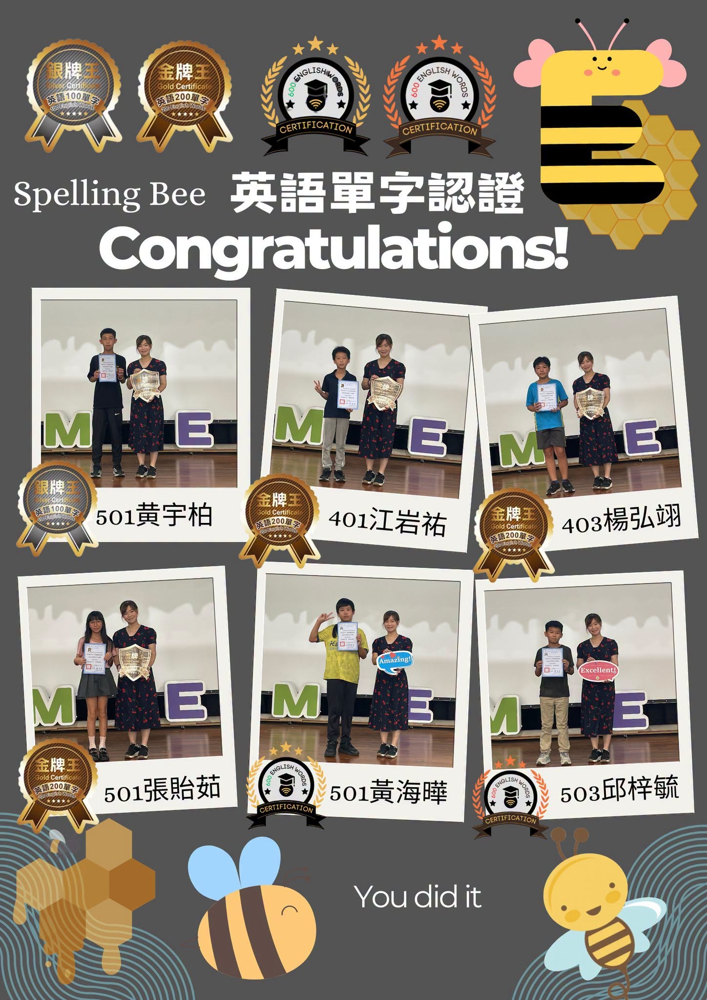
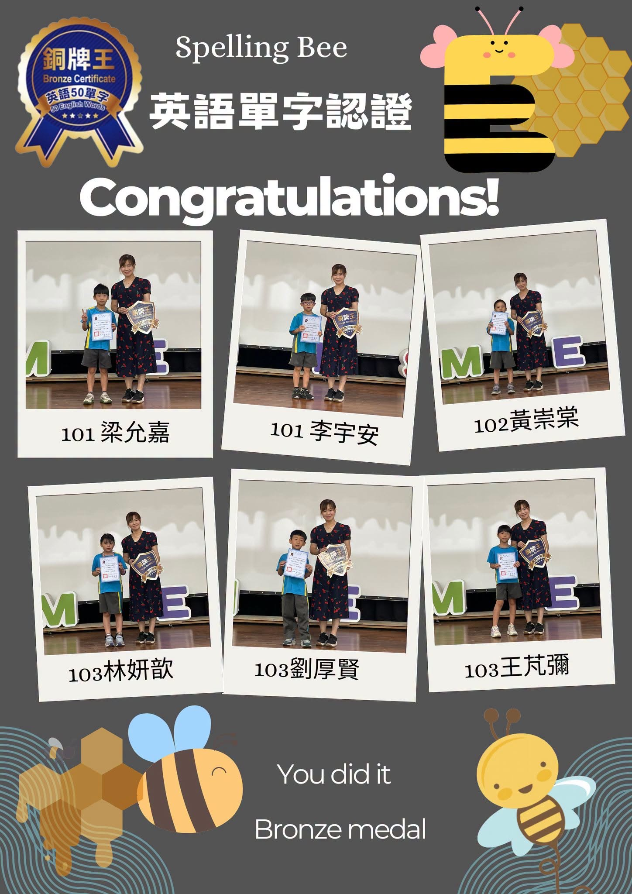

Huge congratulations to our students! In this round of the English Vocabulary Certification, every participant passed with an outstanding high score — a truly incredible achievement that shows just how hard these students have been working. 🎉
Memorising vocabulary is one of the most important building blocks of learning English. The process can be slow and sometimes feels repetitive — but these students proved that with daily effort and amazing perseverance, every milestone is reachable. Seeing the look of excitement and pride on their faces when they received their certificates made all the hard work worth it!
A huge thank you also goes to all the parents and families who have walked this journey alongside your children — your support and encouragement make all the difference. Let's keep moving forward together on this English adventure! 🚀
🏆【榮譽榜｜賀！榮獲英語單字認證】🏆
狂賀！本班學員在本次的「英語單字認證」中表現亮眼，全數高分通過！🎉🎉🎉
單字是語言的基石，背單字雖然過程枯燥，但同學們憑著驚人的毅力和每日的累積，成功解鎖了這個里程碑！看到大家拿到合格證書時興奮的模樣，老師們真的無比驕傲！❤️
恭喜所有通過認證的同學們：
Gold Medal · 金牌
- 四年一班 江岩祐
- 四年三班 楊弘翊
- 五年一班 張貽茹
Silver Medal · 銀牌
- 五年一班 黃宇柏
Bronze Medal · 銅牌
- 一年一班 梁允嘉
- 一年一班 李宇安
- 一年二班 黃崇棠
- 一年三班 林妍歆
- 一年三班 劉厚賢
- 一年三班 王芃彌
- 二年一班 黃宇霈
- 二年一班 劉聿翔
- 二年二班 劉昱霆
- 二年二班 張忻烜
- 二年二班 蘇睿君
- 二年二班 張人元
Special Achievement · 特別表揚
- 五年一班 黃海曄 — 400 Vocabulary Words
- 五年三班 邱梓毓 — 600 Vocabulary Words
恭喜你們！Congratulations on your success!
感謝家長們一路上的陪伴與支持，讓我們繼續陪伴孩子在英文的路上自信前行！🚀
Words About Learning & Success英語學習角 · 和學習與成功有關的小單字
Six key words from this story, each with an example sentence — then a five-question quiz. Tap 🔊 to listen.
六個關鍵字，每個字配一個例句，最後有五題小考。點 🔊 聽發音。
情境：兩位同學在拿到英語單字認證成績後聊天。